01 · Internal Tool · Crypto · PayOps · Bitso
Hubble.
AI-crafted operational platform managing 9 million users' daily crypto and fiat operations — $220M USD flowing through it every day. Led as Lead Designer heading 4 designers across 5 product squads.
01 — Situation
$220M a day through a system that wasn't built to handle it.
Bitso's operational back-office had outgrown the tool it was built on. The legacy Bitso Admin — a patchwork of interfaces accumulated over years of growth — was handling the daily operations of 9 million users across 7 currencies in multiple markets. But it was brittle, inconsistent, and operationally risky at the scale Bitso had reached.
Every day, $220M USD moved through the platform in the form of SPEI deposits, FIAT withdrawals, crypto transfers, KYB verifications, account screening, and compliance reviews. The teams running these operations — PayOps, Compliance, Risk, KYC analysts — were doing it through an interface that slowed them down and created errors at scale.
Hubble was the answer: a new, purpose-built internal platform designed from the ground up for the complexity of a scaled crypto fintech — unified, consistent, and built to grow.
The challenge wasn't just design. It was migrating 9 million users' operational data, 5 product squads, and 7 currencies into a new system while keeping $220M/day in operations running without disruption.
through Hubble
on the platform
in the fleet
COP · USD · USDC · Crypto
02 — My Role
Lead Designer — team lead, mentor, and strategic design reference.
As Lead Product Designer at Bitso, I was the strategic and technical design reference across a fleet of 5 product squads — influencing cross-functional decisions, raising the design quality bar across teams, and driving design system adoption throughout the organization.
Within that fleet, one squad was fully dedicated to designing and implementing Hubble. I led that squad's design direction while also mentoring and managing 4 designers across the other squads — setting standards, running design reviews, unblocking teams, and building a cohesive design culture at Bitso.
Team structure
03 — AI Design Process
Design directly in code. Ship PRs. Skip the handoff.
Hubble was where I fully embraced an AI-first design workflow — not as an experiment, but as the primary way I worked. Instead of designing in Figma and handing off specs for engineers to interpret, I prototyped directly in Cursor AI and Claude Code, generating working code that could be validated in the real UI environment.
When a prototype was solid, I pushed it directly — opening PRs to GitHub and contributing changes to the actual product codebase. This compressed the design-to-production cycle dramatically: what would have taken days of back-and-forth between design and engineering happened in hours, with fewer misinterpretations and a tighter feedback loop.
⬡ AI-First Design Workflow
Research & requirements → Figma explorations → Cursor AI prototype → Claude Code refinement → PR to GitHub → Production
04 — Design Explorations
KYB migration — ideation, flows & architecture.
Before building in Hubble, I explored the full migration of KYB from the legacy Bitso Admin — mapping related parties, verification flows, and compliance requirements into Hubble's new information architecture. These explorations informed the final design decisions across the KYB and compliance squads.
KYB migration overview · Legacy admin → Hubble · Information architecture
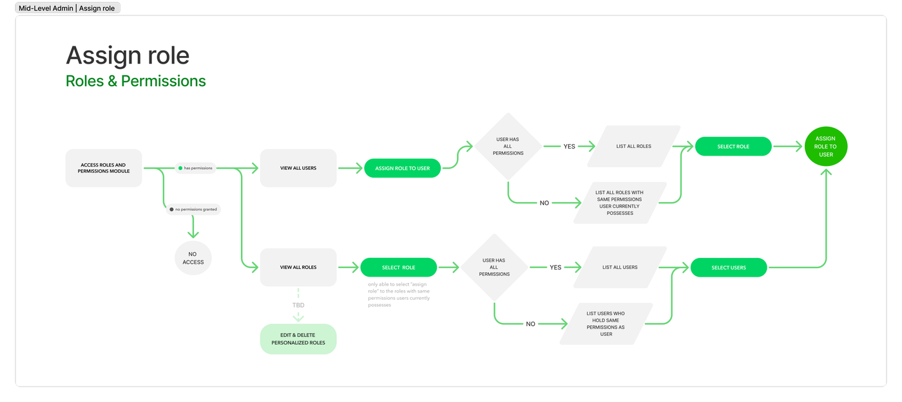
KYB flow exploration · Related parties structure
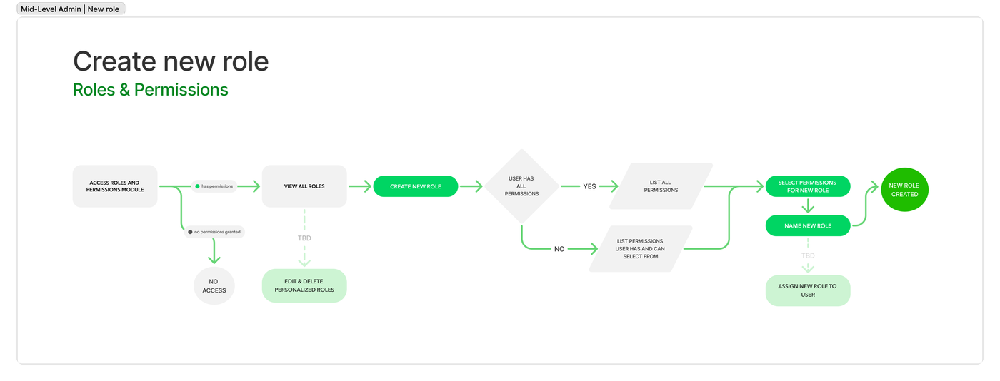
Verification flow · PEP / UBO · GDC status
Compliance tools · Account screening · Risk flags
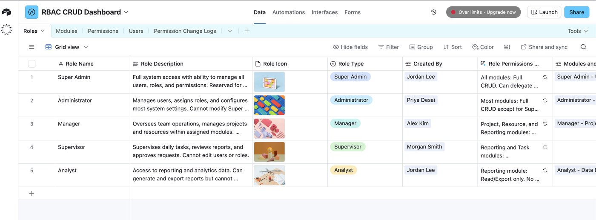
Account actions · Products & services · Multi-currency
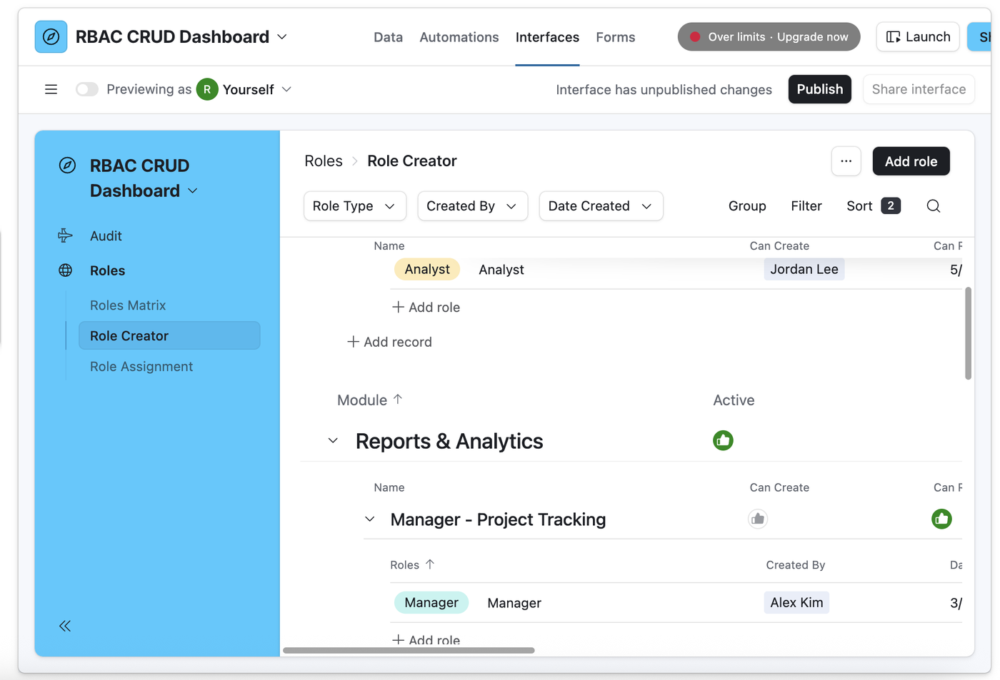
Ideation summary · Design decisions · Handoff to squad
05 — Product Screens
Hubble in production — KYB, PayOps & Compliance.
The platform covers the full operational surface of Bitso's PayOps and Compliance teams — from KYB verification of businesses and related parties, to account actions, level management, and reconciliation reporting.
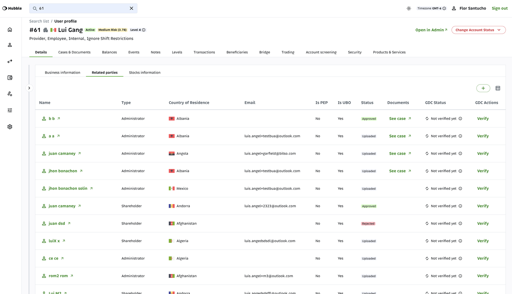
KYB migration — Related parties · Administrators & shareholders · PEP/UBO · GDC verification status
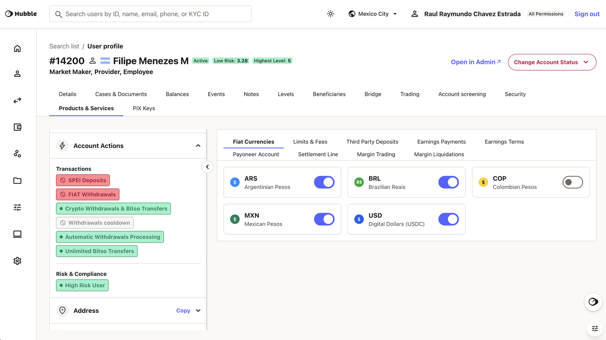
Account actions · Products & services · Risk flags · Multi-currency
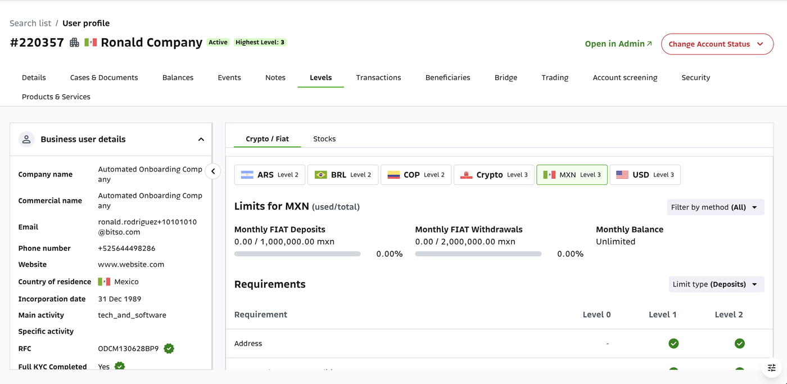
KYC levels · Transaction limits · Multi-currency per market
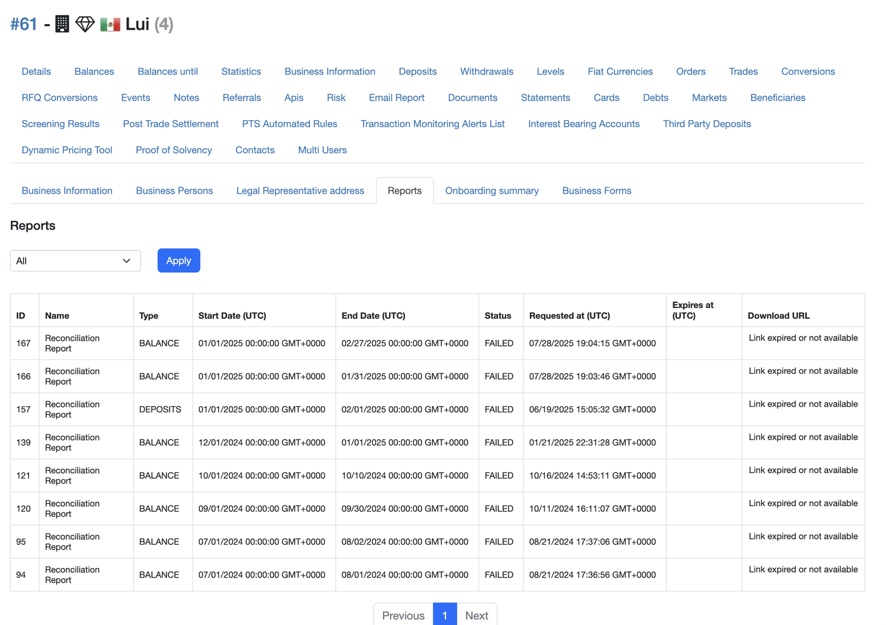
Reconciliation reports · Balance reporting · Multi-currency audit trail
Hubble production — primary operational view
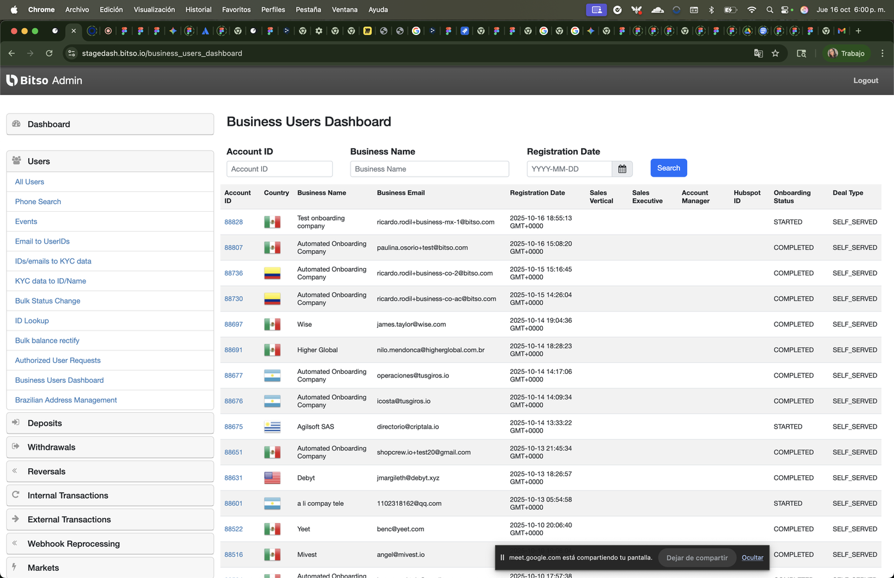
Operator workflow · Detail view
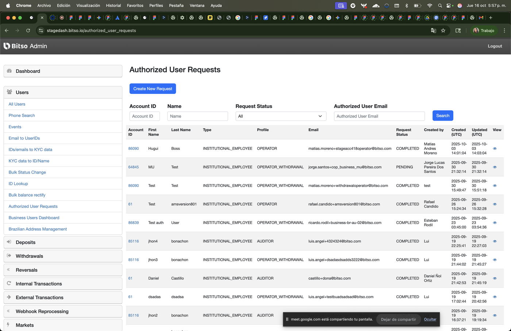
Compliance panel · Status tracking

Transaction view · Multi-currency
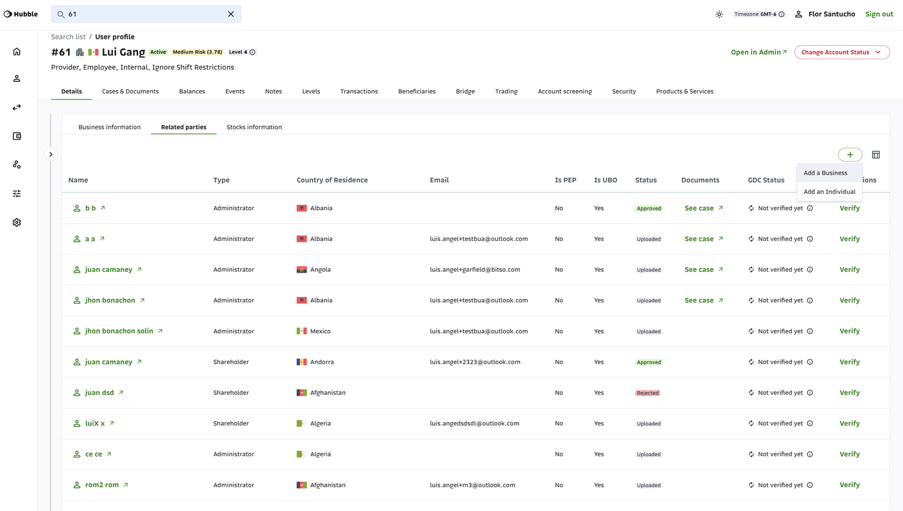
User profile · Risk flags
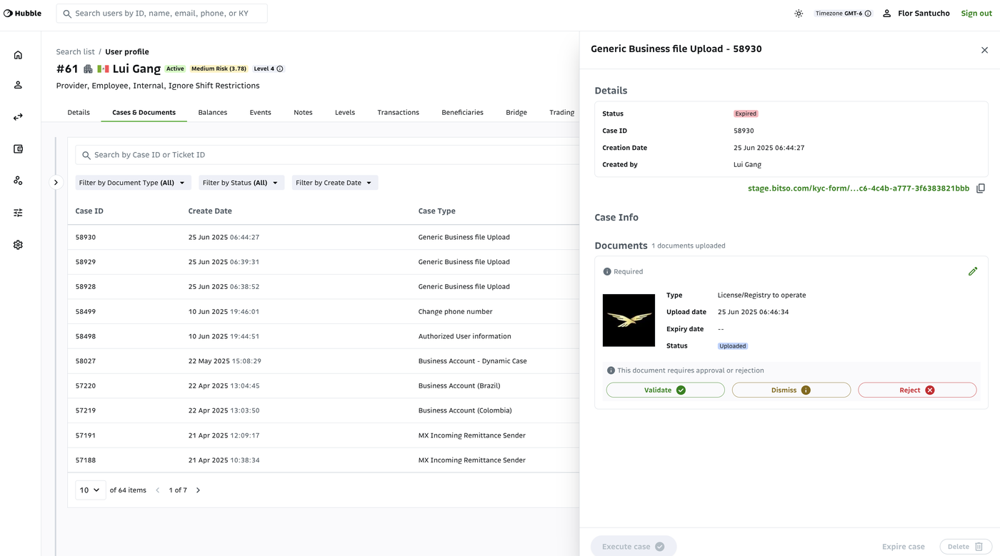
Account actions · SPEI · FIAT · Crypto
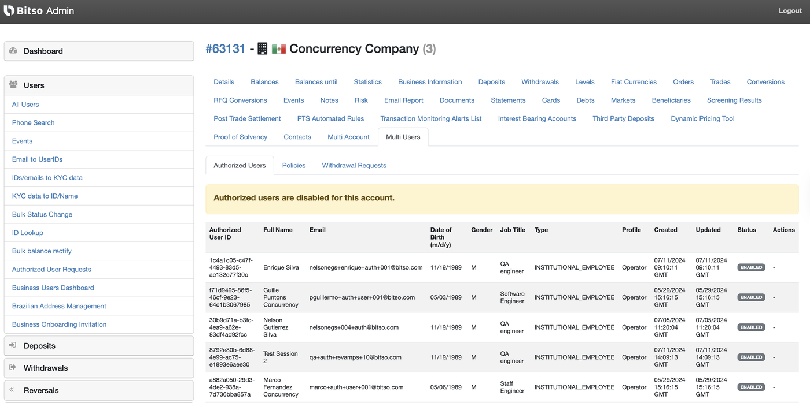
KYC levels · Market limits

Reconciliation · Balance reports · Audit trail
06 — RBAC Design
Role-based access — design system for operator permissions.
One of the most complex design challenges in Hubble was defining a role-based access control system for a platform where operator permissions directly affect compliance outcomes. I designed the full RBAC system — from role creation flows to the permissions matrix — ensuring operational teams could be managed safely at scale.

Design exploration — RBAC role management · Role creator · Permissions matrix
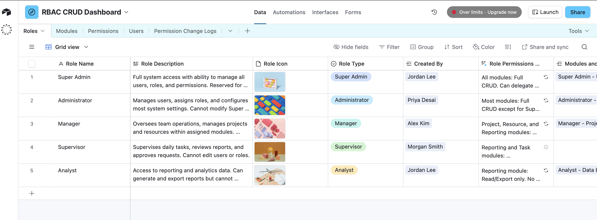
RBAC dashboard · Role overview · Operator assignment
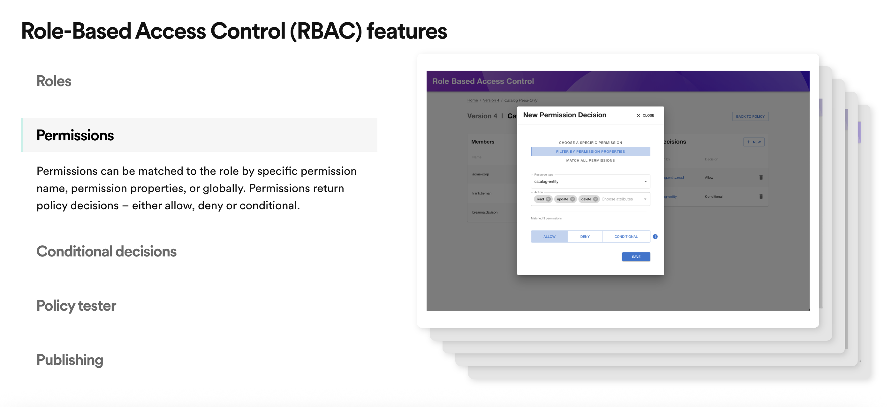
Permissions matrix · Feature access · Role types
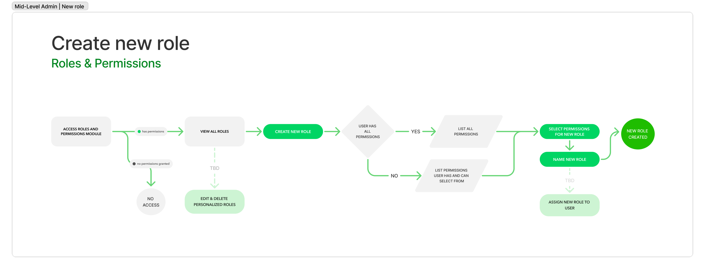
Flow — Create role · Analyst · Manager · Custom
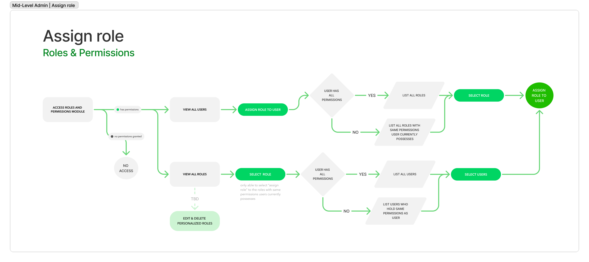
Flow — Assign role · Operator management · Audit log
07 — Results
A unified platform for $220M/day. Shipped in code.
Hubble replaced the legacy Bitso Admin as the operational backbone for PayOps, Compliance, KYC, and Risk teams — giving operators a consistent, scalable platform purpose-built for the complexity of a regulated crypto fintech operating across multiple markets and currencies.
The AI-first design process meant features went from concept to production faster than any traditional design-to-engineering handoff allowed. By working directly in code, prototyping in Cursor AI, and contributing PRs to GitHub, the design work became indistinguishable from engineering work — and Hubble shipped as a reflection of that tight integration.
For the team of 4 designers under my leadership, the work on Hubble served as both a product and a model — demonstrating what an AI-oriented, technically engaged design practice looks like in a high-stakes, high-scale production environment.